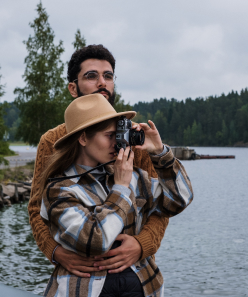
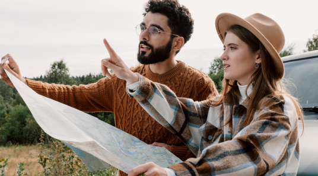
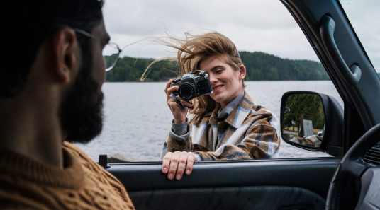
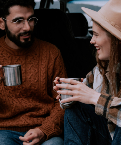
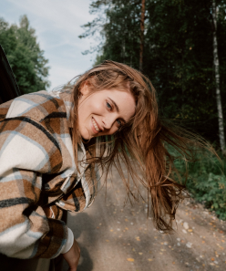
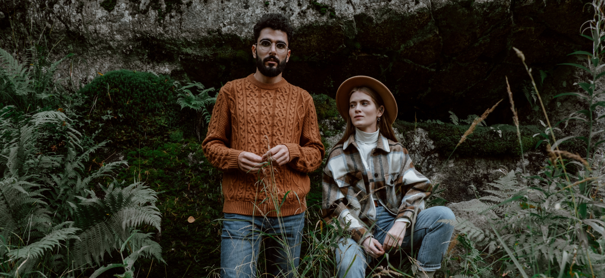

«Жизнь во время путешествия – это мечта в чистом виде»
Этим летом многим из нас пришлось искать альтернативу привычному отдыху. Фрилансеры из Уфы Маша Гордеева и Женя Михайлов все лето путешествовали по живописным местам России на своей машине. Они поделились с нами своими впечатлениями, советами и лайфхаками.

Мы с ранних лет путешествовали с родителями по России. Это всегда было для нас долгожданным событием и всегда доставляло море положительных эмоций. В основном мы путешествовали по Краснодарскому краю, по приморским городам. Первые несколько лет мы обычно до моря добирались на поезде. Там всегда присутствовала очень комфортная и приятная обстановка. Чем ближе подъезжали к южному климату, тем больше менялся пейзаж за окном, и тем больше можно было влюбиться в природу края. Но потом начали путешествовать на машине, и оказалось, что одни и те же места могут вызывать разные впечатления.
Когда мы планировали поездку, мы сразу подумали о том, что для нас важно. Нам точно необходим хороший интернет, чтобы иметь возможность работать. Хотелось посетить места с водоемами, чтобы покупаться и еще мы ценим уединение, тишину. Большую часть нашего путешествия мы планировали останавливаться в мотелях и хостелах, но еще взяли с собой палатку, чтобы иногда ночевать на природе. Мы приняли решение посетить не популярные курортные города России, а места с живописной природой, реками, озёрами. Выбрали Карелию и Урал. В Екатеринбурге у нас есть друзья, и мы планировали организовать речной сплав с ночёвкой.
Мы не слишком детально просчитывали расходы до поездки, однако нам не хотелось много тратить и мы старались экономить, но без ущерба комфорту и впечатлениям. В итоге наши траты вышли совсем скромными по сравнению с тем, если бы мы поехали отдыхать в Таиланд или на другой курорт. На бензин мы потратили около 20 000 ₽, траты на жилье составили примерно 30 000 ₽, учитывая, что мы часто ночевали в машине или в палатке. У нас большая машина с вместительным багажником, поэтому дискомфорта не возникало. Вещей брали по минимуму, самое необходимое поместилось в пару рюкзаков.
   Конечно помимо еды и жилья не стоит забывать о безопасности поездки. Мы сделали туристическую страховку, так как сплавлялись по реке. До поездки проверили всю машину, сделали ТО, диагностику. На всякий случай, купили минимум необходимых лекарств. Также сказали близким, что отправляемся в путешествие и скачали приложение Zenly, чтобы они могли знать, где мы находимся. Еще у нас была финансовая подушка, на экстренный случай. В итоге, нам не пригодились ни страховка, ни лекарства, но такие простые действия позволяют чувствовать себя в безопасности. Когда предусмотрел все заранее, можно наслаждаться поездкой.
Раньше мы предпочитали пляжный отдых, много месяцев жили во Вьетнаме, в Таиланде, посетили множество курортов Европы. К путешествию по России у нас были предрассудки, думали, что это дороже и не так интересно. Но мы ошибались. Оказывается, мы совсем не знаем нашу страну, она удивила нас своими пейзажами, добрыми людьми, доступностью. Если бы не пандемия, мы бы не решились на такое путешествие. Но после этой поездки мы уверены, что посетим и другие места России. Хочется съездить на Алтай, посетить Владивосток, съездить на юг страны. Хоть мы там и были, путешествие на машине дарит совсем другие впечатления.
 